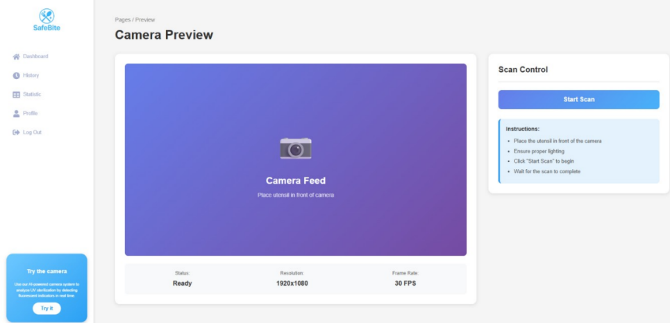
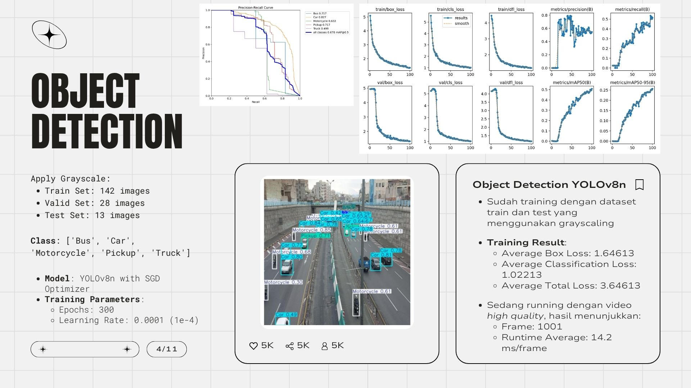
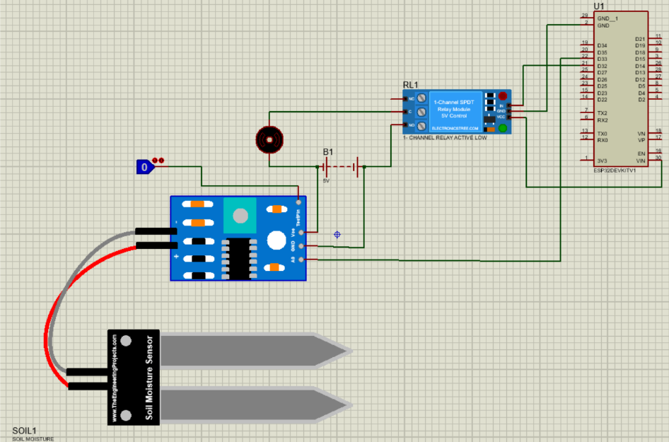
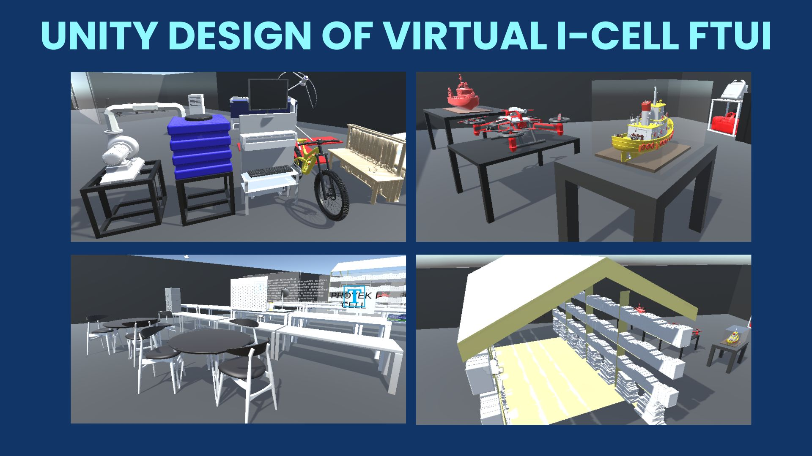
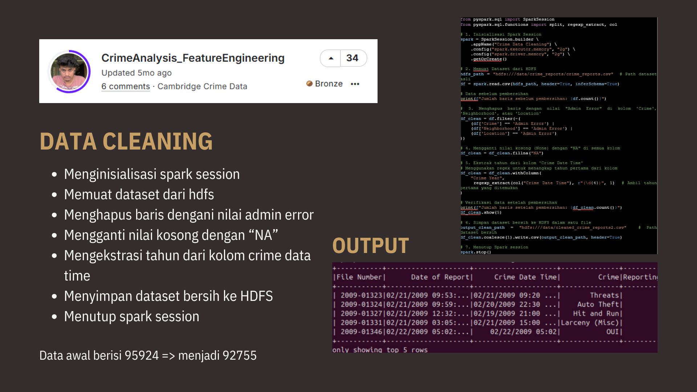
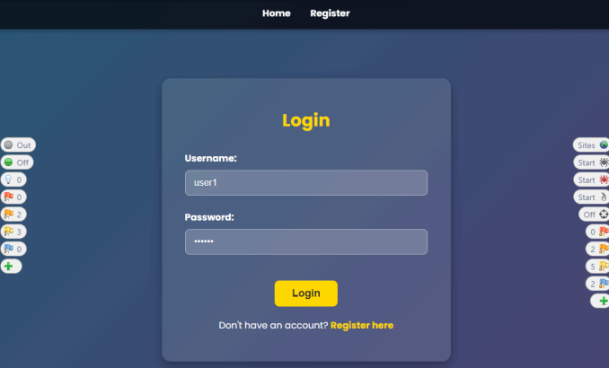
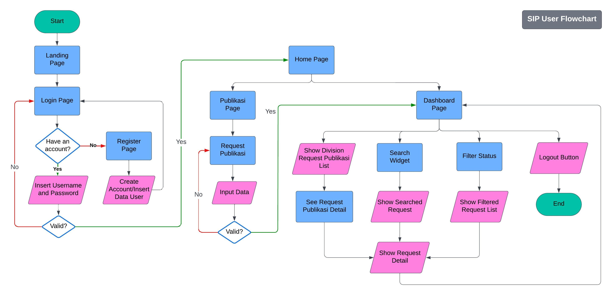
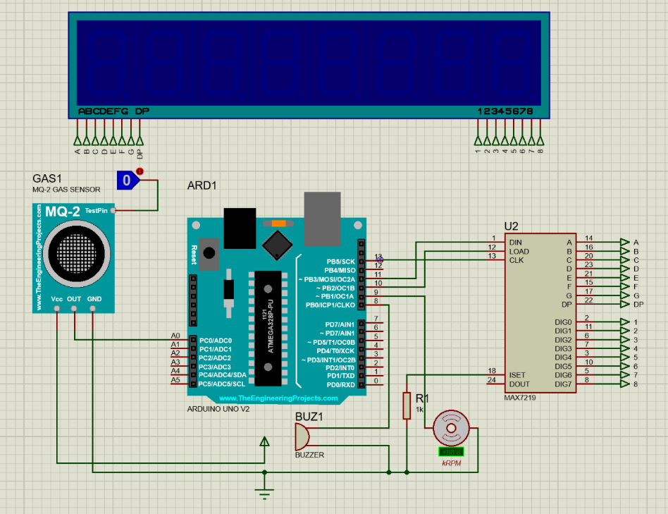
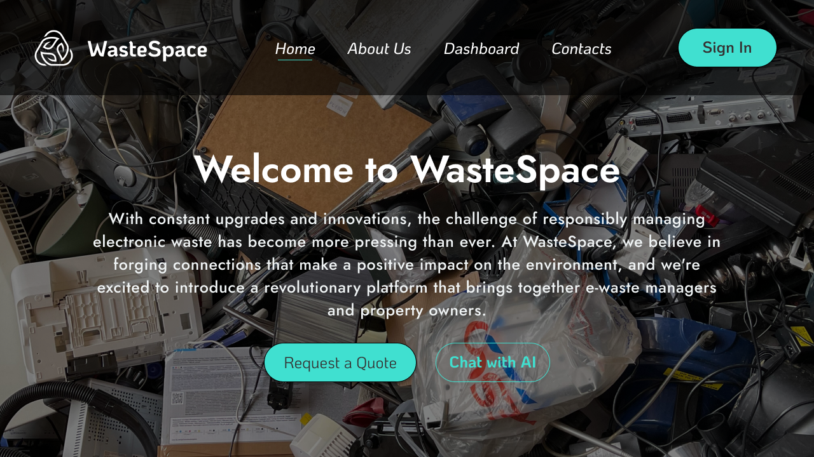
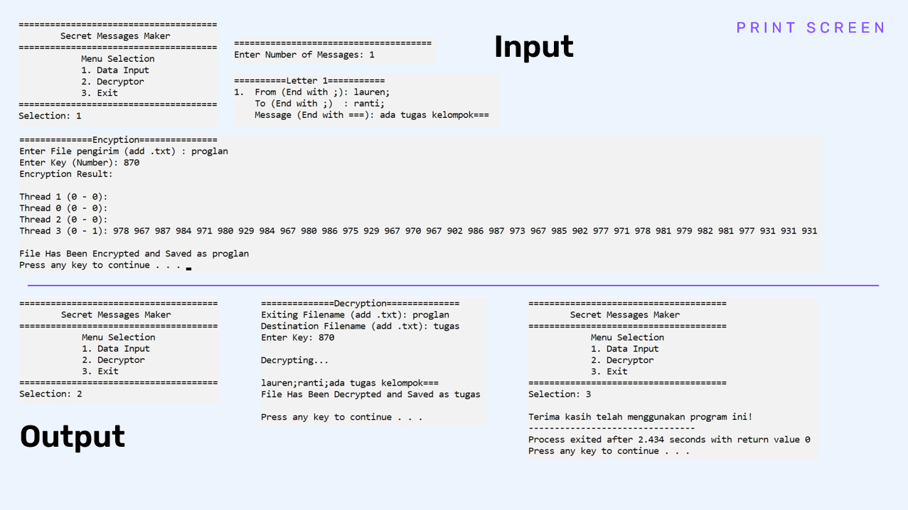

Some projects I've worked on

Aplikasi berbasis AI dan IoT yang dirancang untuk meningkatkan keamanan pangan pada program MBG dengan mengidentifikasi serta mensterilisasi kuman/bakteri yang terdeteksi secara real-time menggunakan teknologi pemindaian UV.

Proyek analisis data untuk mendeteksi kendaraan dalam suatu gambar maupun video menggunakan teknologi YOLOv8.

Sistem penyiraman tanaman otomatis berbasis ESP32 yang memungkinkan pemantauan tanaman serta kendali jarak jauh sistem penyiraman melalui integrasi aplikasi Blynk.

Proyek desain 3D interaktif untuk memvisualisasikan struktur gedung I-CELL FTUI dengan tujuan konteks pendidikan dan penelitian.

Proyek analisis Big Data yang berfokus pada pengolahan data kriminal di Cambridge untuk menemukan tren dan pola tertentu guna mendukung pengambilan keputusan dalam pencegahan kejahatan di masa depan.

Simulasi skenario serangan dunia nyata untuk menganalisis, mendokumentasikan, dan menilai kelemahan keamanan pada aplikasi web, khususnya pada celah Blind SQL Injection dan keamanan JWT.

Aplikasi berbasis web yang dirancang untuk memfasilitasi anggota organisasi semacam BEM dalam melakukan permintaan berbagai jenis publikasi secara terstruktur.

Sistem deteksi gas beracun menggunakan sensor MQ-2 untuk memantau konsentrasi gas berbahaya di udara secara real-time dengan memanfaatkan pemrosesan dari Arduino UNO sebagai prosesor utama.

Aplikasi web yang memanfaatkan kecerdasan buatan untuk melakukan identifikasi sampah elektronik (e-waste) melalui pengenalan gambar guna membantu penyaluran pengelolaan limbah yang tepat.

Aplikasi yang dibangun menggunakan bahasa C dan teknik kriptografi, sehingga memungkinkan pengguna untuk mengenkripsi dan mendekripsi pesan rahasia.